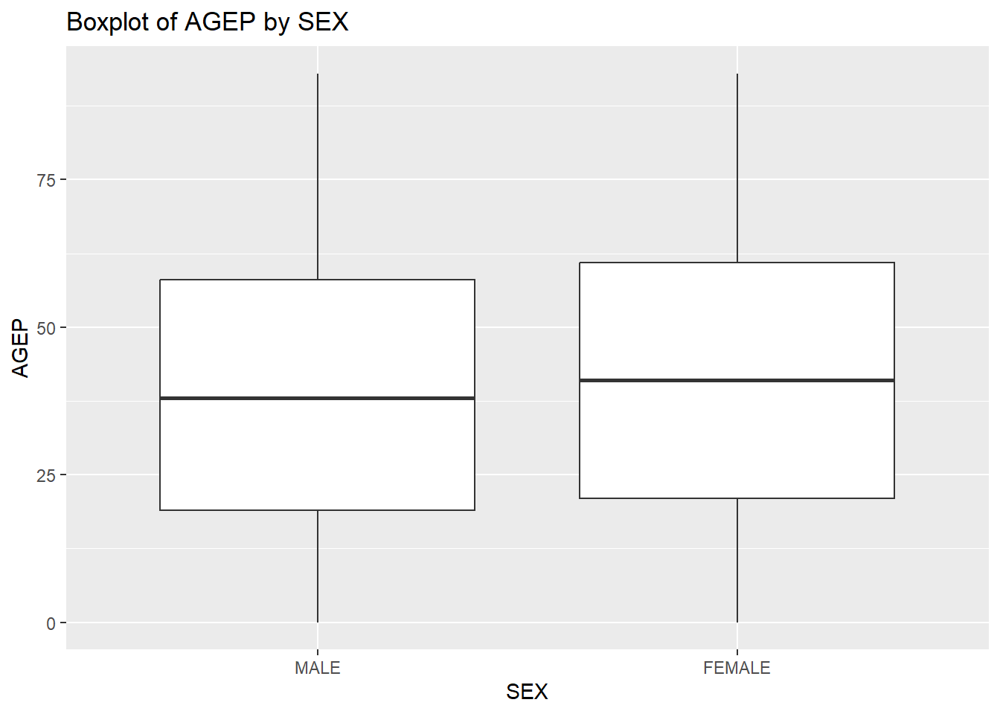

# added by Jay for conversion of JSON GET to tibble
convert_to_tibble <- function(response) {
json_content <- fromJSON(rawToChar(response$content))
as_tibble(json_content[-1, ]) |>
setNames(json_content[1, ])
}ST558 Project 1: Group A
Loading required libraries, include = FALSE.
For this project, we structured our workflow around the central task of making API calls to the U.S. Census PUMS data. After discussing the details of the project and its goals and divided our tasks into the following:
- Eric wrote the initial API call function, focusing on constructing the API URL based on user inputs such as the year, numeric variables, categorical variables, and geographic region.
- Jay brought his computer science expertise to this project by greatly improving our filtering/subset functions, writing the helper function to transform the JSON response into a tidy tibble along formatting factor levels, and writing the summary function to create visual plots for insights from the data.
Helper Functions:
Function to return json_content as a tibble.
Function to convert our data to a usable datetime format.
# added by Jay for converting chr to datetime format
get_time <- function(variable) {
url <- paste0("https://api.census.gov/data/2022/acs/acs1/pums/variables/", variable, ".json")
response <- GET(url)
# added by Jay for error handling
if (status_code(response) != 200) {
stop("error for: ", variable)
}
temp_list <- fromJSON(rawToChar(response$content))
time_info <- temp_list$values$item
time_catg_info <- time_info[sort(names(time_info))]
return(time_catg_info)
}
# added by Jay for converting chr to datetime format
convert_time_code <- function(code, time_catg_info) {
if (code %in% names(time_catg_info)) {
# extract the time range as a string
time_range <- time_catg_info[[code]]
time_parts <- strsplit(time_range, " to ")[[1]]
time_parts <- gsub("a.m.", "AM", time_parts)
time_parts <- gsub("p.m.", "PM", time_parts)
start_time <- strptime(time_parts[1], format = "%I:%M %p")
end_time <- strptime(time_parts[2], format = "%I:%M %p")
# calc the middle of the time period
if (!is.na(start_time) && !is.na(end_time)) {
middle_time <- start_time + as.difftime(difftime(end_time, start_time, units = "mins") / 2, units = "mins")
return(as.POSIXct(middle_time, format = "%Y-%m-%d %H:%M:%S"))
} else {
return(NA)
}
} else {
return(NA)
}
}
#Test:
#typeof(convert_time_code("055", get_time("JWAP")))
#get_time("JWAP")Designing the API:
Using examples from the PUMs website to we were able to understand how to construct our API call. We came up with the function:
Pums_APIdata(year,numerical variables, categorical variables,geographic region)
With the following inputs and restrictions:
- Year:
- Will only accept any year between 2010-2022.
- Example: Pums_APIdata(year=2022)
- Numerical Variables (num_variables):
- Valid Variables: AGEP, GASP,GRPIP,JWAP,JWDP,JWMNP,PWGTP
- Requires at least one numerical variable or will return an error(Not counting PWGTP)
- Will add PWGTP if not added.
- Example:Pums_APIdata(num_variables=“AGEP”)
- Categorical Variables (cat_variables):
- Valid Variables: FER, HHL, HISPEED, JWTRNS, SCH, SCHL, SEX
- Requires at least one categorical variable or will return error.
- Example:Pums_APIdata(cat_variables=“SCH”)
- Geographic Region (geography):
- Valid Variables: ALL, REGION, DIVISION, STATE
- If option state is chosen, Opt_Subset can be used to filter a specific state.
- Example: Pums_APIdata(geography=“STATE,Opt_Subset=”01”)
# changed by Jay to add option for subsetting data
Pums_APIdata <- function(year=2022, num_variables =c("AGEP","PWGTP"),cat_variables="SEX",geography="STATE",Opt_subset="01"){
#Automatically capitalize our variables
num_variables<-toupper(num_variables)
cat_variables<-toupper(cat_variables)
geography<-toupper(geography)
#Year Range Check
if (year < 2010 | year > 2022){
print("Invalid Year. Acceptable year range: 2010-2022.")
return()
}
# Numeric Variable check
# changed by Jay as it should receive True of False
valid_numeric_vars <- c("AGEP", "GASP", "GRPIP", "JWAP", "JWDP", "JWMNP", "PWGTP")
if (!all(num_variables %in% valid_numeric_vars)) {
warning("Invalid Numeric Variable(s). Choose from: ", paste(valid_numeric_vars, collapse = ", "))
return()
}
#if PWGTP is the only variable, return error.
if((length(num_variables) == 1 && num_variables == "PWGTP")){
print("Need another numerical variable other than PWGTP")
return()
}
#if PWGTP not in set, adds it
if(!("PWGTP" %in% num_variables)){
num_variables <-c(num_variables,"PWGTP")
}
#Categorical Variable Check
if((length(cat_variables) == 0)){
print("Need at least one categorical variable")
return()
}
# cat variable choice check
# changed by Jay as if should receive True of False
valid_cat_vars <- c("FER", "HHL", "HISPEED", "JWTRNS", "SCH", "SCHL", "SEX")
if (!all(cat_variables %in% valid_cat_vars)) {
warning("Invalid categorical variable(s) specified. Choose from: ", paste(valid_cat_vars, collapse = ", "))
return()
}
# Geography Check
# changed by Jay as if should receive True of False
valid_geography <- c("ALL", "REGION", "DIVISION", "STATE")
if (!geography %in% valid_geography) {
warning("Invalid Geography Variable. Choose from: ", paste(valid_geography, collapse = ", "))
return()
}
#API key here:
API_key<-"2b989c8e8efa3003c17e6eb0ca728a968e04a441"
#Adding num/cat variables to our url
variables_url<-paste(c(num_variables,cat_variables),collapse=",")
#Base URL w/ year variable
base_pums_url <-paste0("https://api.census.gov/data/",year,"/acs/acs1/pums?get=",variables_url)
# added by Jay to subsetting the data
if (!is.null(Opt_subset)) {
#Adding geography to URL
if (geography == "ALL"){
full_url <- paste(base_pums_url,"&key=",API_key,sep="")}
else if (geography == "REGION"){
full_url <- paste(base_pums_url,"&for=region:",Opt_subset,"&key=",API_key,sep="")}
else if (geography == "DIVISION"){
full_url <- paste(base_pums_url,"for=division:",Opt_subset,"&key=",API_key,sep="")}
else if (geography == "STATE"){
full_url <- paste(base_pums_url,"&for=state:",Opt_subset,"&key=",API_key,sep="")}
} else {
full_url <- paste(base_pums_url,"&key=",API_key,sep="")}
#API Fetch:
pums_fetch <- httr::GET(full_url)
# Check for a successful response
if (httr::status_code(pums_fetch) != 200) {
stop("Failed to retrieve data. Check the API URL and parameters.")
}
#Decoding data:
pums_tibble <- convert_to_tibble(pums_fetch)
# # added by Jay to convert numeric and time Variables
valid_time_vars <- c("JWAP", "JWDP")
for (col in colnames(pums_tibble)) {
if (col %in% num_variables && !col %in% valid_time_vars) {
# Convert to numeric
pums_tibble[[col]] <- as.numeric(pums_tibble[[col]])
} else if(col %in% valid_time_vars){
pums_tibble[[col]] <- sprintf("%03d", as.numeric(pums_tibble[[col]]))
}
}
# # added by Jay for Convert JWAP and JWDP to Time
if ("JWAP" %in% colnames(pums_tibble)) {
pums_tibble$JWAP <- sapply(pums_tibble$JWAP, convert_time_code, time_catg_info = get_time("JWAP"))
pums_tibble$JWAP <- as.POSIXct(pums_tibble$JWAP)
}
if ("JWDP" %in% colnames(pums_tibble)) {
pums_tibble$JWDP <- sapply(pums_tibble$JWDP, convert_time_code, time_catg_info = get_time("JWDP"))
pums_tibble$JWDP <- as.POSIXct(pums_tibble$JWDP)
}
# # added by Jay to convert cat variables to factors
factor_labels <- list(
FER = c("N/A", "Yes", "No"),
HHL = c("N/A", "English Only", "Spanish", "Other Indo-European languages", "Asian and Pacific Island Languages", "Other Languages"),
HISPEED = c("N/A", "Yes", "No"),
JWTRNS = c("N/A", "Car, truck or van", "Bus", "Subway or elevated rail", "Long distance train or commuter rail",
"Light rail, street car or trolley", "Ferryboat", "Taxicab", "Motorcycle", "Bicycle", "Walked",
"Worked from home", "Other method"),
SCH = c("N/A", "No, has not attended in the last 3 months",
"Yes, public school or public college", "Yes, private school or college or home school"),
SEX = c("MALE", "FEMALE")
)
for (col in colnames(pums_tibble)) {
if (col %in% names(factor_labels)) {
pums_tibble[[col]] <- factor(pums_tibble[[col]], levels = seq_along(factor_labels[[col]]), labels = factor_labels[[col]])
}
}
#Debug checker:
print(paste("API URL:",full_url))
print("Numeric Variables:")
print(num_variables)
print("Categorical Variables:")
print(cat_variables)
print(paste("Geography:",geography))
#Returns tibble
class(pums_tibble) <- c("census", class(pums_tibble))
return(pums_tibble)
}Testing exception cases/output:
#Invalid Year:
Pums_APIdata(2009)[1] "Invalid Year. Acceptable year range: 2010-2022."NULL#If PWGTP is the only variable:
Pums_APIdata(2012,num_variables="pwgtp")[1] "Need another numerical variable other than PWGTP"NULL#PWGTP being added if it's not chosen:
Pums_APIdata(2012,num_variables ="agep")Warning: The `x` argument of `as_tibble.matrix()` must have unique column names if
`.name_repair` is omitted as of tibble 2.0.0.
ℹ Using compatibility `.name_repair`.[1] "API URL: https://api.census.gov/data/2012/acs/acs1/pums?get=AGEP,PWGTP,SEX&for=state:01&key=2b989c8e8efa3003c17e6eb0ca728a968e04a441"
[1] "Numeric Variables:"
[1] "AGEP" "PWGTP"
[1] "Categorical Variables:"
[1] "SEX"
[1] "Geography: STATE"# A tibble: 47,819 × 4
AGEP PWGTP SEX state
<dbl> <dbl> <fct> <chr>
1 74 184 MALE 1
2 33 210 MALE 1
3 68 31 FEMALE 1
4 44 62 MALE 1
5 42 61 MALE 1
6 13 38 FEMALE 1
7 12 38 FEMALE 1
8 11 41 MALE 1
9 20 288 MALE 1
10 86 52 FEMALE 1
# ℹ 47,809 more rows#Testing invalid geographic region:
Pums_APIdata(geography="city")Warning in Pums_APIdata(geography = "city"): Invalid Geography Variable. Choose
from: ALL, REGION, DIVISION, STATENULLTesting Subset option:
test <- Pums_APIdata(year = 2022, num_variables = c("AGEP"),cat_variables =c("SEX"), geography = "STATE", Opt_subset = '01')[1] "API URL: https://api.census.gov/data/2022/acs/acs1/pums?get=AGEP,PWGTP,SEX&for=state:01&key=2b989c8e8efa3003c17e6eb0ca728a968e04a441"
[1] "Numeric Variables:"
[1] "AGEP" "PWGTP"
[1] "Categorical Variables:"
[1] "SEX"
[1] "Geography: STATE"Filtered by state ‘01’ (Alabama)
unique(test$state)[1] "01"Multi Year Function
Using pums_multiYearData, you are able to specify a range of years and return a tibble.
# added by Jay for calling single year API many times
Pums_multiYearData <- function(years = 2022, num_variables = c("AGEP", "PWGTP"),
cat_variables = "SEX", geography = "STATE", Opt_subset = "01") {
all_data <- purrr::map_dfr(years, ~ {
year_data <- Pums_APIdata(year = .x, num_variables = num_variables,
cat_variables = cat_variables, geography = geography,
Opt_subset = Opt_subset)
year_data$YEAR <- .x
return(year_data)
})
return(all_data)
}Testing Multi-Year function:
multi_year_data <- Pums_multiYearData(years = c(2021,2022), num_variables = c("AGEP", "PWGTP","JWAP"))[1] "API URL: https://api.census.gov/data/2021/acs/acs1/pums?get=AGEP,PWGTP,JWAP,SEX&for=state:01&key=2b989c8e8efa3003c17e6eb0ca728a968e04a441"
[1] "Numeric Variables:"
[1] "AGEP" "PWGTP" "JWAP"
[1] "Categorical Variables:"
[1] "SEX"
[1] "Geography: STATE"
[1] "API URL: https://api.census.gov/data/2022/acs/acs1/pums?get=AGEP,PWGTP,JWAP,SEX&for=state:01&key=2b989c8e8efa3003c17e6eb0ca728a968e04a441"
[1] "Numeric Variables:"
[1] "AGEP" "PWGTP" "JWAP"
[1] "Categorical Variables:"
[1] "SEX"
[1] "Geography: STATE"unique(multi_year_data$YEAR)[1] 2021 2022Summary function
Cleans up our tibble with column proper names for our variables. It also returns a summary with the mean/std/counts of our variables.
# added by Jay for summarize num and cat variables
summary.census <- function(pums_tibble, numeric_vars = NULL, cat_vars = NULL) {
# if user give null then get all
if(is.null(numeric_vars)){
numeric_vars <- setdiff(names(pums_tibble)[sapply(pums_tibble, is.numeric)], "PWGTP")
}
if(is.null(cat_vars)){
cat_vars <- names(pums_tibble)[sapply(pums_tibble, is.factor)]
}
summary_list <- list()
weight_vector <- pums_tibble$PWGTP
for (num_var in numeric_vars) {
num_vector <- pums_tibble[[num_var]]
# added remove N/A
sample_mean <- sum(num_vector * weight_vector, na.rm = TRUE) / sum(weight_vector, na.rm = TRUE)
# added remove N/A
sample_stddev <- sqrt(sum((num_vector^2) * weight_vector, na.rm = TRUE) / sum(weight_vector, na.rm = TRUE) - sample_mean^2)
summary_list[[paste0(num_var, "_mean")]] <- sample_mean
summary_list[[paste0(num_var, "_stddev")]] <- sample_stddev
}
# Summarize categorical variables
for (cat_var in cat_vars) {
cat_vector <- pums_tibble[[cat_var]]
# not sure about this. will ask on forum what is summary of cat variable
cat_summary <- pums_tibble %>%
group_by(!!sym(cat_var)) %>%
summarize(weighted_count = sum(PWGTP, na.rm = TRUE)) %>%
ungroup()
summary_list[[paste0(cat_var, "_counts")]] <- cat_summary
}
return(summary_list)
}census_summary <- summary.census(test)Example of our summary function:
census_summary$AGEP_mean
[1] 39.75216
$AGEP_stddev
[1] 23.44001
$SEX_counts
# A tibble: 2 × 2
SEX weighted_count
<fct> <dbl>
1 MALE 2461361
2 FEMALE 2612935Plotting variables
Using plot.census able to generate a box plot by specifying variables in our tibble.
# added by Jay for plotting box plot
plot.census <- function(census_tibble, cat_var, num_var) {
if (!(cat_var %in% colnames(census_tibble))) {
stop(paste("Categorical variable", cat_var, "not found in the dataset."))
}
if (!(num_var %in% colnames(census_tibble))) {
stop(paste("Numeric variable", num_var, "not found in the dataset."))
}
# added labels and title
ggplot(census_tibble, aes(x = get(cat_var), y = get(num_var), weight = PWGTP)) +
geom_boxplot() + labs(x = cat_var, y = num_var, title = paste("Boxplot of", num_var, "by", cat_var))
}Boxplot of Sex vs Age of Patient.
plot.census(test, cat_var = "SEX", num_var = "AGEP")Warning in .recacheSubclasses(def@className, def, env): undefined subclass
"ndiMatrix" of class "replValueSp"; definition not updated